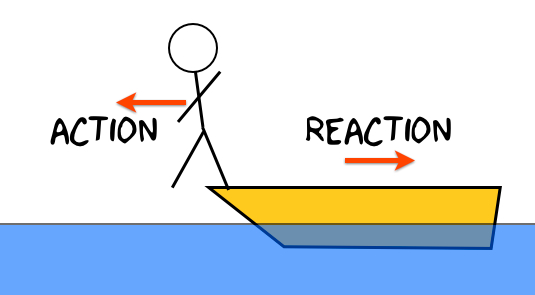

A force is a push or a pull that acts upon an object as a results of its interaction with another object. Forces result from interactions! As discussed in Lesson 2, some forces result from contact interactions (normal, frictional, tensional, and applied forces are examples of contact forces) and other forces are the result of action-at-a-distance interactions (gravitational, electrical, and magnetic forces). According to Newton, whenever objects A and B interact with each other, they exert forces upon each other. When you sit in your chair, your body exerts a downward force on the chair and the chair exerts an upward force on your body. There are two forces resulting from this interaction - a force on the chair and a force on your body. These two forces are called action and reaction forces and are the subject of Newton's third law of motion. Formally stated, Newton's third law is:
For every action, there is an equal and opposite reaction.

The statement means that in every interaction, there is a pair of forces acting on the two interacting objects. The size of the forces on the first object equals the size of the force on the second object. The direction of the force on the first object is opposite to the direction of the force on the second object. Forces always come in pairs - equal and opposite action-reaction force pairs.
Video Explaination
Newton's third law of motion | Forces and Newton's laws of motion